Driftwood: how I learned it
By the driftwood student. What I'd teach from this is in TUTORIAL.md. My raw working thread, every step and every image I opened, is in the notebook. The study itself is at ~/work/pixelart-studies/elements/driftwood/, and a snapshot of its code is in code/.
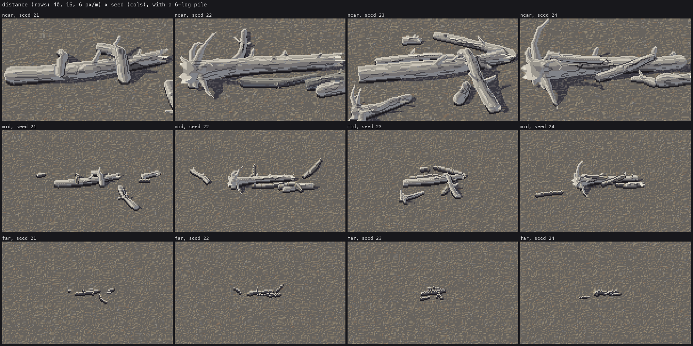
The last sheet I made: small piles at 40, 16 and 6 px per metre. The top row is the best work in the study.
I had one evening, about two hours and forty minutes, to learn to paint driftwood in Mark Ferrari's pixel language. That means whole trees and logs stranded on river gravel: silvered, barkless trunks with root wads and snapped stubs, piled against each other. The brief said to build up one form at a time. Start with one log in greyscale, then its material, its stubs and roots, colour, a pile, and finally a painter with parameters swept on sheets. At every stage I was to put a photo, my pixels and the nearest thing in Ferrari side by side at 8×.
A critic watched the study folder and wrote rounds into a CRITIQUE.md while I worked, thirteen of them in the end. I'll quote it where it changed what I did, which was often.
This is the story in order, dead ends included.
0. Before painting: reading around
I started with the studio's shared notes. SYNTHESIS.md is the integrator's summary of what four earlier students had found. The rules that mattered most to me later:
- Paint indices, not colours. Ferrari's index map is a form map; the palette is the light. The master-copy student had found that his morning and afternoon scenes have identical index maps.
- Two light families that never touch.
- Clean runs are for narrow forms. A 1–2 px form (a crack, a twig) must step in regular runs (1:1, 2:1, 4-4-4), or it reads as noise. A mass outline is not a line; a textured mass ends in a fringe.
- Contact: masses sit on a flat run with a 1-px darker contact line.
The master-copy student's LESSONS.md gave me the thing that shaped the whole study. Ferrari's Living Worlds scenes exist as original indexed data (the Canvas Cycle JSON files), and that student had already fetched them to pedagogy/master-copy/ref/lw/. So I could read his pixels as numbers, and not just guess at them from RGB.
There was also an older technique file in the transfer project, transfer/lib/tech_logs.py, with recipes for bark, bleached logs, splinters and root plates. I read it and decided to start again from Ferrari, because it had never been checked against him.
Photos
The brief's photo is a Svalbard braided-river bar strewn with logs:
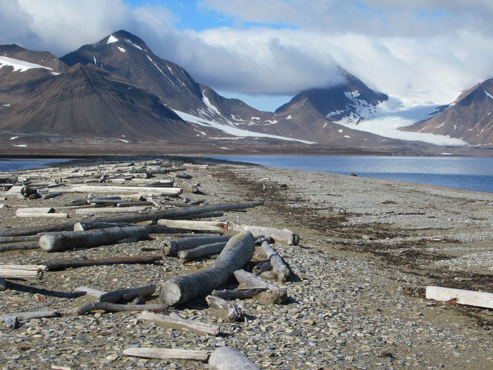
I fetched more with the studio's imgfetch.py:
python3 ~/work/pixelart-studies/tools/imgfetch.py "driftwood gravel bar river" -n 12 -o refs --sheet
python3 ~/work/pixelart-studies/tools/imgfetch.py "driftwood log close" -n 12 -o refs --sheet
python3 ~/work/pixelart-studies/tools/imgfetch.py "root wad" -n 12 -o refs --sheet
Wikimedia rate-limited some of them (HTTP 429), but about thirty came through. "Root wad" mostly found excavators lifting root wads onto trucks for river restoration: good for the shape of a wad, useless for driftwood. The three I leaned on most were a close log on a cobble bar, Driftwood on Gravel bar (a low camera, grain, and one big knot hole); a gnarled silver log on pink granite at Stångehuvud (grain that waves round knots); and Driftwood log on sand in wind (the one root wad on a beach).

Looking for Ferrari's logs
Ferrari never painted driftwood. I made a contact sheet of the twelve Living Worlds scenes and went looking for anything trunk-like:

- V02 (dusk marsh): a fallen dead tree lying across the water, contre-jour, its twigs as bold strokes. The only fallen tree in the set.
- V09 (Deep Forest): a pale, smooth, sunlit trunk in the middle distance, and a big grey barked trunk in the foreground.
- V30 and the "mossy forest pool": gnarled mossy limbs, including a grey leaning one with marks along it.
- The snow-forest scene: dark trunks with bright braided bark ridges.
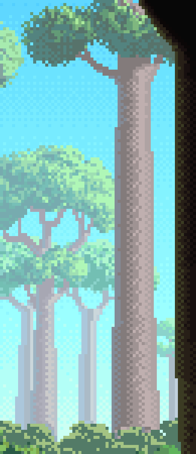

The pale V09 trunk was the cleanest cylinder in sun he'd painted. The grey limb in the mossy pool was the closest to weathered grey wood with marks. I started with the cylinder.
1. The master copy: Ferrari's pale trunk, as numbers
I loaded V09's index map and printed the trunk as symbols, one character per class:
d = load('V09'); idx = d['idx']
sym = {132: 'c', 131: '4', 130: '3', 129: '1', 128: '2'}
for y in range(96, 252):
print('%3d ' % y + ''.join(sym.get(int(v), '.') for v in idx[y, 356:396]))
170 ............cc44433311122...............
171 ............cc44343311212...............
172 ............cc44433131122...............
173 ............cc44343311212...............
174 ............c444433311122...............
Reading the palette entries by value, the 13-px trunk is five form classes in a fixed order across its width, from the shadow edge to the lit edge:
| class | index | RGB | grey value | what it is |
|---|---|---|---|---|
| c | 132 | (131,139,151) | 138 | reflected rim, cool, the sky's bounce |
| 4 | 131 | (131,123,123) | 125 | core, a warm grey |
| 3 | 130 | (159,147,147) | 149 | halftone |
| 1 | 129 | (191,175,175) | 179 | light |
| 2 | 128 | (175,163,163) | 166 | lit edge, falling back as the form turns away |
Three things surprised me:
- The whole trunk spans only about 55 grey levels. The mass is held close.
- The seams are a checker of the two neighbouring classes, 1–2 px wide, running along the axis. Only three mixing levels occur (pure, 50%, pure), and the pattern repeats exactly every 8 rows, like a DPaint gradient fill.
- Dithering follows spatial order, not value order. The core (125) dithers straight into the halftone (149) and skips the cool rim colour (138), even though the rim lies between them in value.
The first copy (s0a_pale_trunk.py) fitted a 1-D profile across the trunk: four break positions and a choice of dither matrix, found by coordinate descent. It matched 87% of his trunk pixels exactly.

The second copy was the one that mattered. s0a2_pipeline_copy.py paints the trunk from a lit 3-D cylinder. At every pixel it takes the angle d of the surface normal around the axis, measured from the light's peak, and maps it to a continuous class coordinate through four breaks. My first attempt used thresholds on N·L and N·V, and only reached 60–79%, because those don't separate the classes cleanly. What worked was fitting the breaks in degrees round the axis:
CYL_BREAKS = np.array([-69.0, -42.0, -13.0, 4.0]) # degrees from the light peak (fitted, 89% exact)
def cylinder_classes(d, phL, breaks=CYL_BREAKS, sh=None):
"""continuous class coordinate v in [0, 4]: piecewise linear through the breaks (v = k+0.5
at break k), from v = 0 at the shadow silhouette to v = 4 at the lit silhouette."""
It matched 89% of his pixels. That means the core starts some 20° past the geometric terminator, and the light class is a thin band at the peak. Because the rule is geometric, it can be rotated to lie down, and everything after this stands on it.
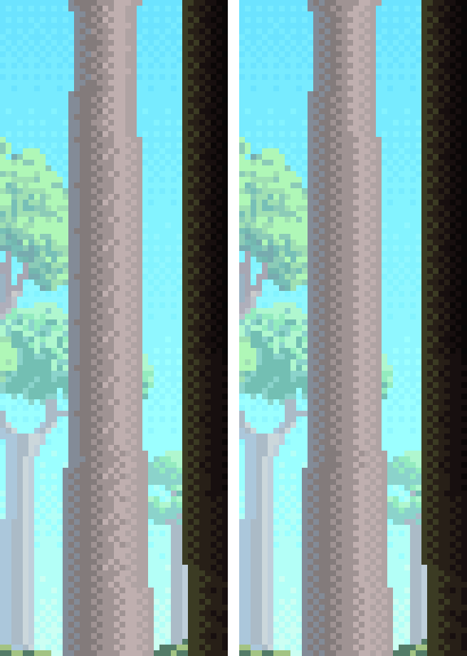
The critic's first round said, correctly, that this didn't count as a copy yet. Both scripts borrowed his silhouette and background, so only the ramp had been tested, and a smooth cylinder is the easiest passage in V09. The one place I'd had to draw (the limb leaving the trunk at the top) came out as a blob. It also said a smooth trunk teaches none of what driftwood is. That sent me to V02.
0B: the fallen dead tree, by hand
I printed V02's dead tree as symbols too (# for the body, r for the rim):
377 .....................####rr...###############rrrr##r.........####r....##r....##r..####r...
378 ...................##################rrrrrrrr.#####r........####rr...##r.....#######rrr..
The rules in it are few and strong:
- Against the dusk glow, the whole body is one near-black class, with no form inside the mass.
- The only light is a 1-px rim of dull maroon on every silhouette pixel facing the glow: a run along the trunk's top, and on each twig the single right-hand pixel,
##r. - Twigs are 2–3 px thick and stay thick until their last third, then taper to 1 px. They kink every few pixels and fork in V and Y crooks.
I tried three ways of making the silhouette myself. First, a copyist's sketch: a trunk centreline with widths and eleven twig polylines, drawn by my own rasteriser. Silhouette IoU with his mass was 0.46. Second, I tried extracting a skeleton from his mask with scikit-image and simplifying it. That was cheating by the back door, and it was worse (it lost the trunk's shape). Third, a hand sketch read off his image column by column: a trunk top edge as a smooth arc from eight control points, and sixteen twig gestures, each with a base width. My rules redraw the strokes, tapering and kinking them, with a knob at each joint.
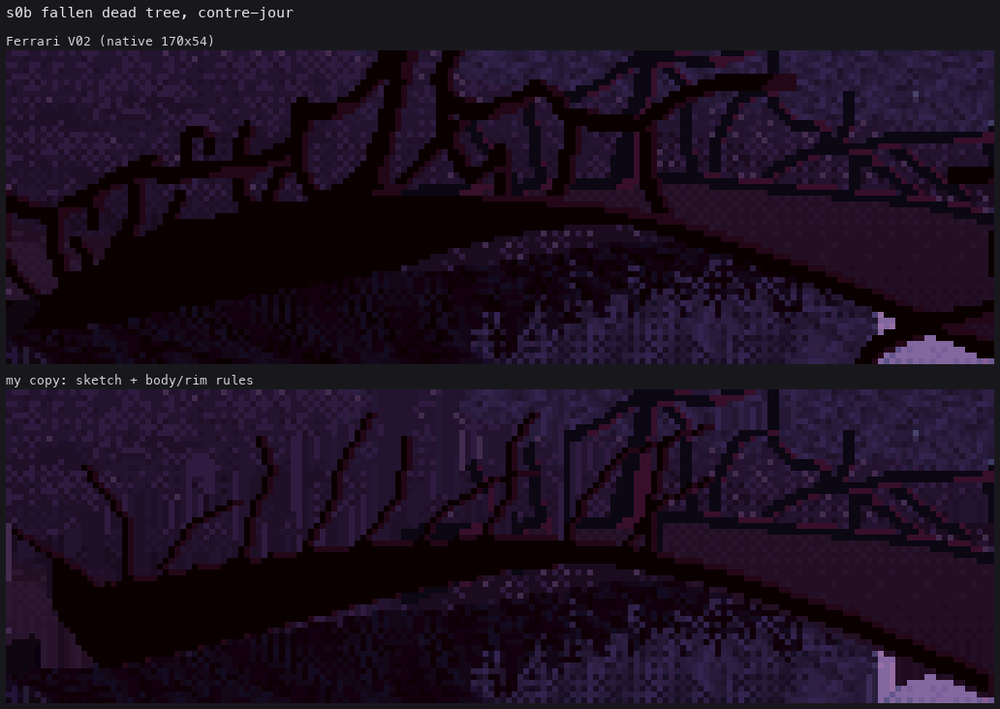
The critic's second round was specific. The branches were straight sticks of even thickness, some floated free of the trunk, and the trunk's upper edge was a ruled staircase. All three were true. The final version is IoU 0.62: the language is right, but the placement of individual twigs is only a sketch. Not a blind match.

2. One log in greyscale
The machinery
I wrote geo.py so the painter would have a world to paint: logs as chains of round cones (Inigo Quilez's exact round-cone SDF), sphere-traced through an orthographic camera. The trace gives every pixel an object id, a part (side, end face, limb), a position, a normal, and the log's own axis tangent and radius there. render.py turns those into an index canvas (mat, step), and a palette turns that into pixels. Cast shadows are rays marched toward the sun against every log.
The first log was a pipe on TV static
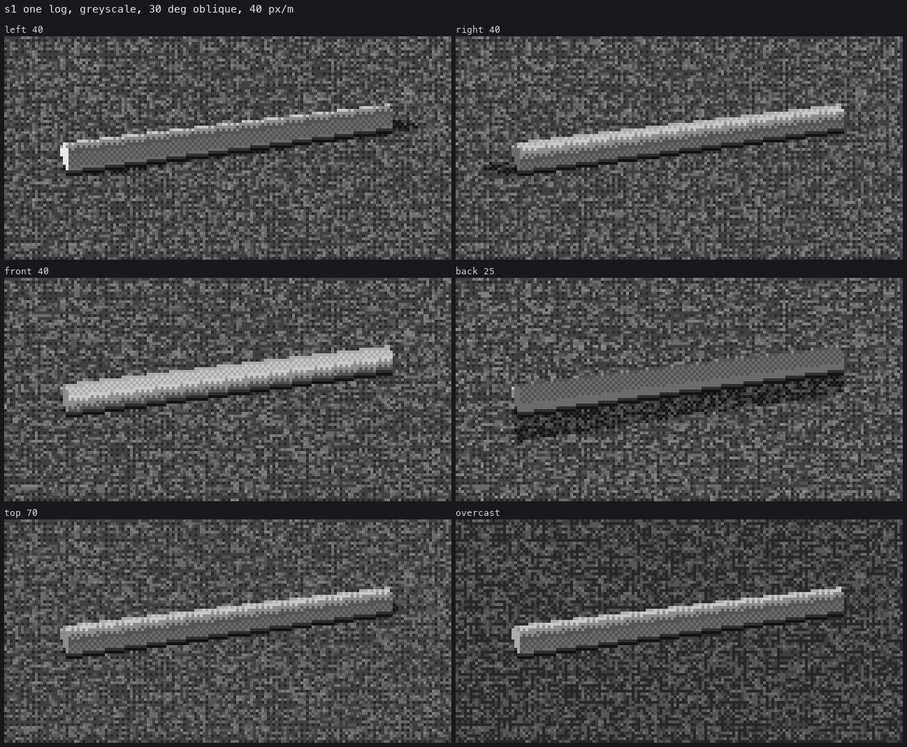
Three things were wrong at once:
- The shading. My first form rule was a lighting formula, with N·L mapped onto the steps. It gave smooth CG shading.
- The ground. The gravel was per-pixel pebble shading with 2–3 px pebbles, and it was TV static, the loudest thing on the sheet.
- The shape. The log was a perfect cylinder with a square cap.
The critic's round 1 said it read as a steel pipe, and it did.
I replaced the formula with cylinder_classes from the copy. That required one piece of new geometry: normal_plane_angles measures both the normal and the light in the plane perpendicular to the log's own axis, so the rule works for a log lying at any angle. It also required each pixel to know its axis tangent T, which I added to the tracer.
Next came a series of fixes, each found by looking at 8× crops.
- Seams scaled with width. A 40-px log got 40-px-wide checker bands. Ferrari's 6-px limbs show pure 1-px bands, and his 13-px trunk mixes over whole classes. So
sharpen()holds seams at 1–2 px whatever the width:gain = max(13/d, d/13). - The lit edge was a sawtooth on a diagonal log, a regular two-tone zigzag (critic, round 2: "the fastest mechanical tell in the image"). The fix was no dither within 2 px of the outline, with each outline pixel taking the majority class of its run.
- The log was a dark pipe with a white stripe. With my first grey ramp (core 84, light 202), most of a lying log's camera-facing side falls in the core class, and it read dark. Ferrari's spacing is close (core 112, rim 128, halftone 152, edge 178, light 204). With that ramp, the same index canvas reads as pale silvered wood. That was my first proof, on my own subject, that the palette is the light.

Making it a log, not a pipe
geo.make_log bends the axis (a lateral bow and a vertical sag), tapers it to about 0.75, adds ±8% lumps to the radius, then lowers the log until its lowest point touches the gravel. A bowed log then rests on two contacts and lifts off between them.
The contact line was straightforward: ground pixels just below the silhouette whose world point is within 2 px of the log go to step 0. The belly pocket had a bug that took one look to find. I marked every ground pixel with the log anywhere above it, which made a 4-px black band under the whole log:

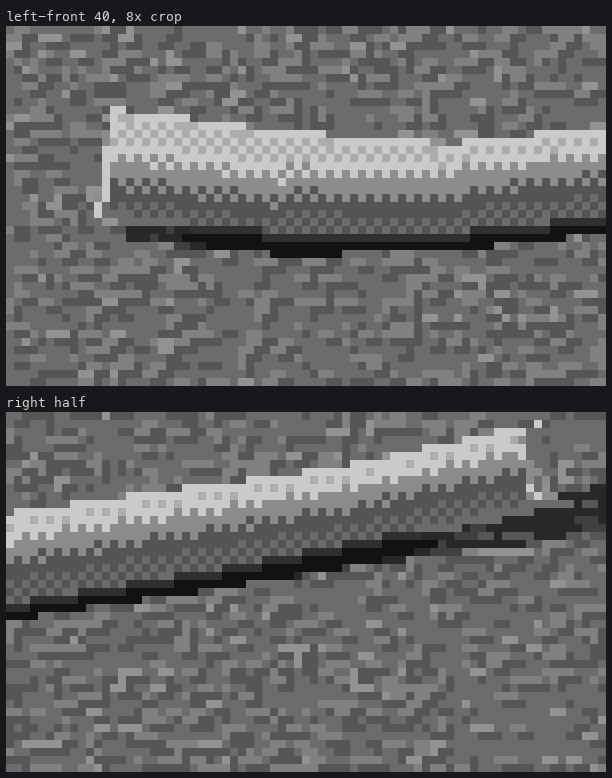
The fix limits the pocket to ground whose vertical clearance to the log is under 2.5 px. A bigger gap is just ground in shadow.
Ends
The brief wanted sawn, snapped and splintered ends. Each took several tries.
- v1: a jagged profile cut into the end, with teeth modulating the cut plane by angle. It rendered as blobs and speckle.
- v2: teeth as separate thin cones. They came out as wires.
- v3: an angular profile scaled by radial fraction, so the break face is a rough cone. It rendered as speckle: pixels missing in the middle of solid wood. That was the SDF's fault. The profile's steep angular slopes made the cut distance far from a true distance, and sphere tracing stepped straight through the surface. The fix was to divide the cut distance by its Lipschitz bound (the profile's steepest slope). Then tracing was conservative again.

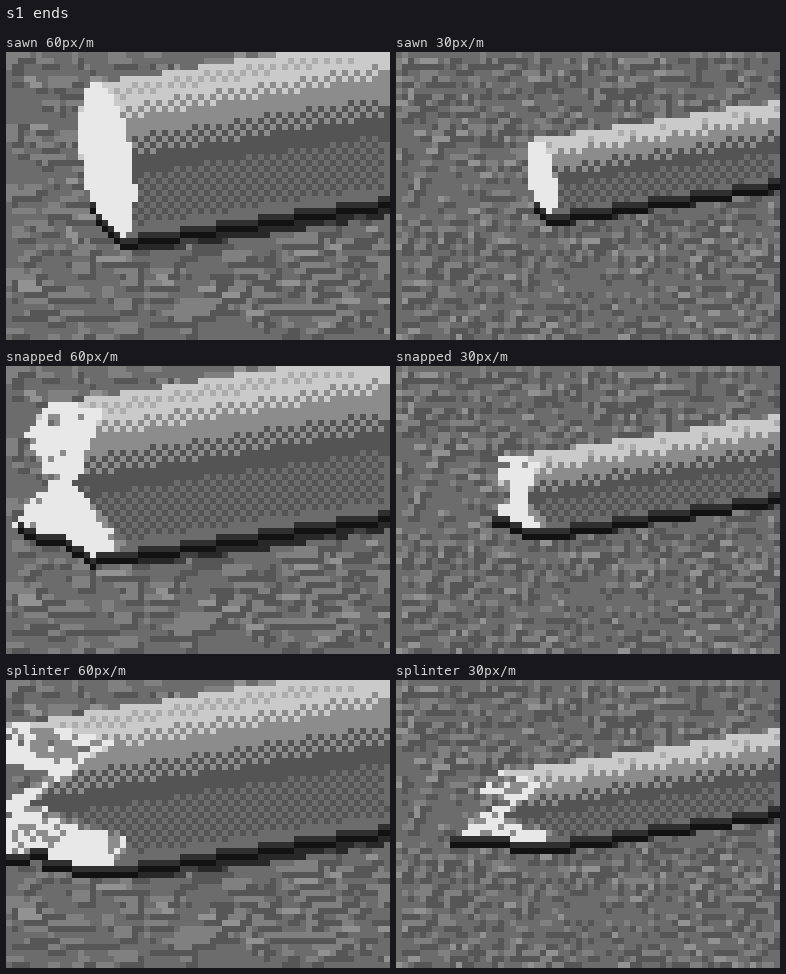
Then the values. A break face shaded by N·L was litter. Value by relief worked: tooth tips 7, the torn face 6 or 4, crevices at the root 2–3, then remove orphan pixels.
The critic's round 3 caught two more things:
- My sawn end drew growth rings as a spiral target, the cartoon-log icon. Weathered end grain at this scale is a flat, lighter face with a softened darker rim and a few radial checks from the heart. Rings now appear only at radii of 20 px or more, as broken arcs.
- Splinters were pixel litter. They're now slivers: each a clean-run 1-px line past the break (
render.clean_line, which snaps the slope to 1:1, 2:1, 3:1 or 4:1), lit or turned, with a dark partner pixel under it.
I also added the worn end, water-rounded with no cut at all, which is the commonest driftwood end and the one I'd forgotten.
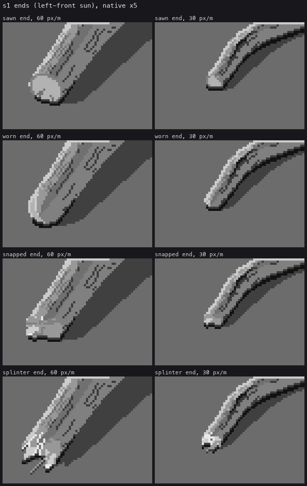
The dashed back-lit rim
Under back light the sun-side rim came out as evenly spaced dashes, like stitching (round 3, and visible in the back-lit cells here):
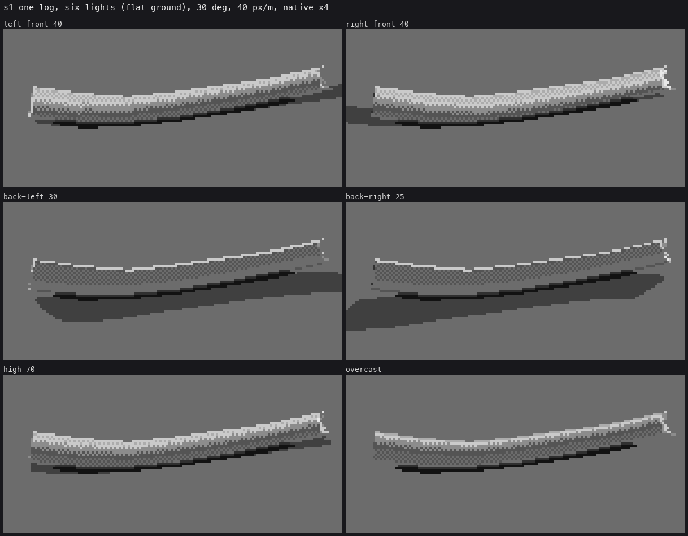
I first read this as a rim-drawing problem. It wasn't: it was shadow acne. A sun ray from a grazing surface point hit its own log, so alternate pixels along the rim fell into "cast shadow". A log's own form shadow is the class rule's job, not the shadow ray's, so geo.shadow now skips the log a point belongs to:
cand &= buf['obj'].reshape(-1) != k # no self-shadow acne
The rim also tests the neighbour toward the sun along x, y and the diagonal, so it is one continuous run that breaks only where the form turns away.
Small logs
At a projected diameter under about 4.5 px, the tracer aliases, so render.thin_logs draws the axis as a clean-run line, a glyph whose rows from the lit side are:
THIN_ROWS = {1: [6], 2: [6, 1], 3: [6, 4, 1], 4: [5, 6, 4, 2]}
The smallest log is a light pixel over a dark one. My first glyphs put a black contact row under every column, which made the small logs heavy black bars. The contact now appears only at 1 px and at 4 px or more.

The ground, and the one thing I never solved
The gravel went through three versions:
- Per-pixel pebble domes: static.
- Stamped pebble glyphs (speck, pair, lozenge, cobble by size): busier.
- World-space shingle plates: a random maze at first, because a hash bug made negative plate ids collide. Once fixed, a calm speckle.
It is still the weakest thing in the study: texture everywhere at one scale, with no masses. The critic said so in rounds 3, 8, 10 and 13, and I agreed. The ground student took it on afterwards, and their masses-first ground is where my logs ended up.
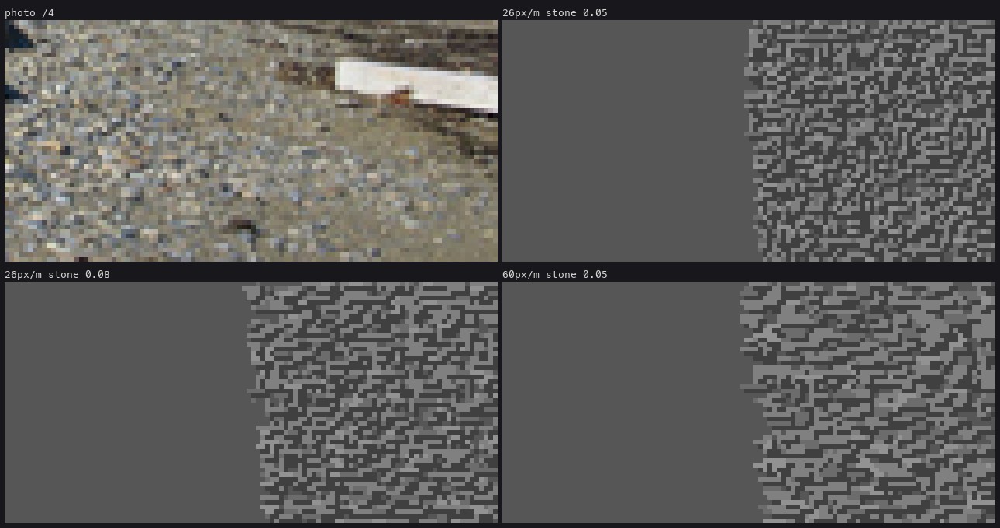
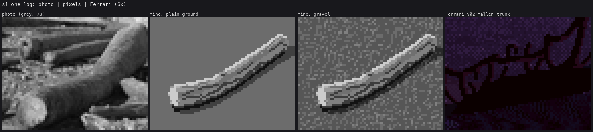
3. The wood's material
I cropped the Stångehuvud log and the Bregenz log at photo scale and looked hard. Silvered wood is smooth and pale. The grain is long, gently waving dark lines along the axis, broken into dashes a few pixels apart, which swell round knots and converge where the wood narrows. A few long checks are the darkest lines. Knots are the single most identifying feature. Fresh bark is the inverse: dark, with lighter braided ridges.
marks.py draws every mark as a curve θ(s) on the 3-D surface, sampled at half-pixel spacing, projected, and hidden where the surface faces away or is covered.
Grain over checker is noise
The first grain went on top of the checkered classes, and the result was dotted-line noise:

The fix is one of the few ideas in this study I'd call a principle. Once marks are on, the form turns by mark density, not by checker. Logs at least 7 px across get pure classes, and the chance that a grain dash is drawn depends on the class under it: dense in the halftone and core, sparse in the light. The lit band stays clean, as in Ferrari's grey trunk.
DENSITY = np.array([0.2, 0.5, 0.85, 0.7, 0.95, 0.75, 0.5, 0.4]) # by the step under the dash
keep = rng.random() < DENSITY[base[yi[len(yi) // 2], xi[len(xi) // 2]]]

Then the craft, again from the critic
- Rounds 4 and 6: "Every grain stroke is parallel to the log axis and flat-ended ... brushed metal or stacked planks."
- The grain now waves (0.06–0.18 rad, with a wavelength of 2–6 diameters).
- Dash tips are a half step.
- Every dash is re-drawn as clean runs (
_snap_runs: a vertex every 5 px, each span a constant-run line). Without that, grain on a diagonal log was zigzag litter. - Round 4: the main check was "a ruled staircase". Checks now wander, open to 2 px in their middle third, close at the ends, stop partway, and carry a lit lip.
- Round 5: my knots were "2×2 dark squares, which read as bullet holes". Knots became geometry: a small sphere smooth-unioned into the surface, so the outline bulges, and the grain curves round it.
- Marks never overwrite the outline row, so the silhouette stays one clean run.
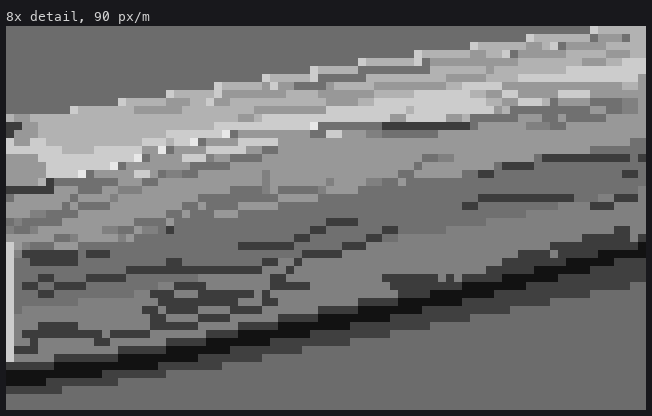
The 8× close-up is the weakest image of the stage. At a 36-px diameter the classes become wide flat plateaus, and the dashes still read as blocks. The critic's closing round lists this as not ready, and I agree.
Bark went through two failures: mid-grey marble (the ridges too close to the body in value), then speckle (I scattered dark "void" pixels). What worked: the body two steps down and the ridges three steps up. The voids are simply the dark body between ridges.
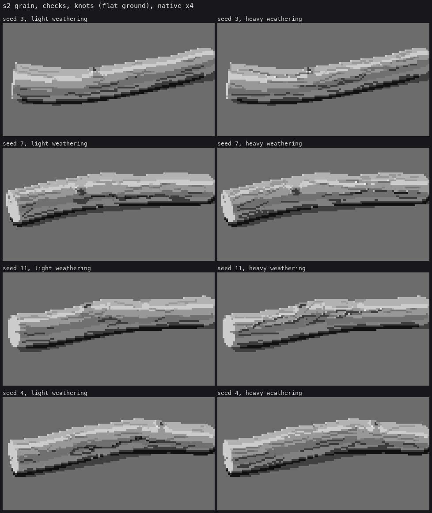
4. Stubs and root wads
The brief said a root wad is a mass (a fringed, tangled disc), while stubs and roots are strokes. So I built exactly that: a lobed dark disc at the butt, with thick roots breaking out of it.

The first try floated the whole log on its roots. The log should tilt onto its wad while the far end stays on the gravel.
Then the mass texture: dark noise, then Voronoi clumps that outlined every cell (a pine cone, a cobbled street), then clumps with a crevice only on each clump's anti-sun side, so a knuckle reads as light-top/dark-bottom:
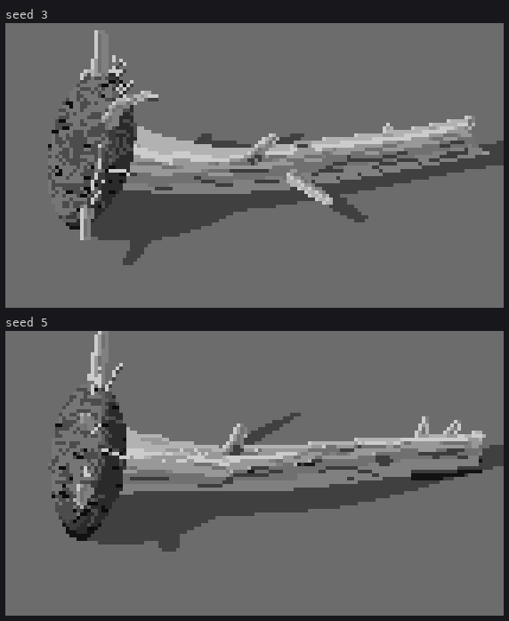

The fringe taught me something general. I placed the fringe rootlets in 3-D on the disc's rim. Nearly every one landed inside the lobed silhouette or hidden behind it, and the mass kept a clean cut-out edge. A fringe is a property of the screen outline, so it has to be drawn there. The final fringe walks the outline and throws 2–6 px clean-run root ends outward from the mass centre.

And then the critic's round 8 took the whole disc away:
The root wad reads as a dark hairy ball stuck on the end: a pinecone or a mop head. In your refs ... a driftwood root wad is the same silvered wood as the trunk. The trunk flares continuously into a few thick twisting roots that radiate out and taper, with big dark voids between them where you see through.
I looked again at Upturned root wad and Root wads, and it was right. Wads stranded on a river bar are washed clean. My one beach reference with a dark wad was the exception. I'd built the brief's words instead of the photographs. _make_fan replaced it: the trunk flares 1.4×, and 8–9 roots leave the rim, each two or three round-cone segments that twist, sweep back and taper. Every root is a limb with its own axis, so it carries the trunk's five classes, and the voids need no painting at all.
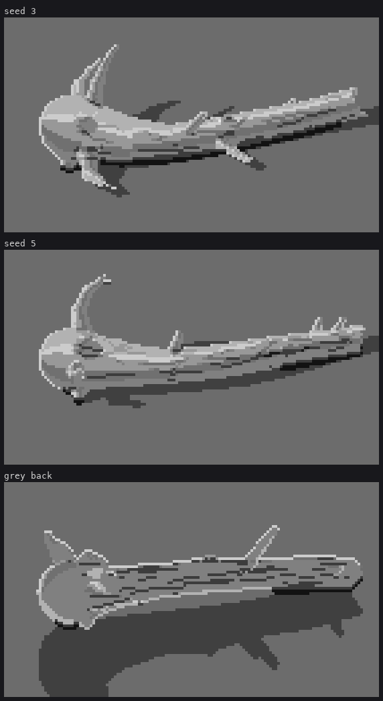

Orientation matters for reading. Side-on, the fan collapses to a few spikes. With the butt toward the viewer, it reads at once.
5. Colour
palette.py is small. It has one 8-step ramp per material, and each hour multiplies the lit steps (4–7) by a sun colour and the shadow steps (0–3) by a sky colour. The index canvas never changes, only the ramps.
My first palette was too eager:

I gave the reflected-rim step an extra cool push on top of the sky tint. The whole lower half of every log turned periwinkle and the ground was sprinkled with blue. Ferrari's trunk core is a warm grey (131,123,123), and only its outermost column leans blue. I took the push out. The critic's round 9, after that, still said the shadow shift was about three times too strong next to the braided-bar photo, where silvered logs are pale on both sides. The final sky multipliers are a third of the first ones (noon: 0.98, 0.99, 1.01). The golden hour keeps a stronger violet, as Ferrari's dusks do.
Wet wood is a separate ramp, about a third darker and turned warm brown, plus a specular glint: pixels whose normal is within about 7° of the sun–eye half vector become the near-white step 7. A wet log without the glint just looked like a brown log.
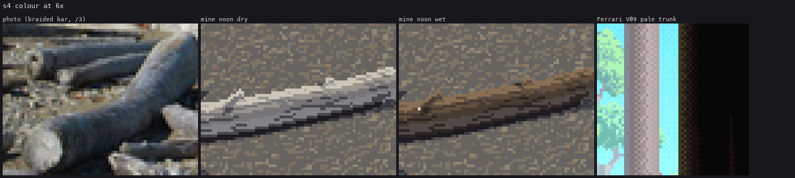
6. Piles
pile.py places logs largest first. Each new log's axis height is the upper convex hull of its support profile: at every point along it, the higher of the gravel and the tops of the logs already beneath. So it rests on its highest supports and spans the gaps between them. render.separate_logs separates neighbours by value, after Ferrari's rock pile in V19:
- where a log rests on another, a contact crack;
- where one passes in front, the rear log's edge drops two steps, but only if the tones would otherwise be within a step of each other.
My first piles all pointed the same way, at similar lengths:

The critic's round 10 put it bluntly: "stacked lumber, or at 9 px/m ... a spaceship glyph". The photo above it has logs at every angle, short broken pieces, and big pale end faces pointing at the camera, which are the most readable shapes in it. The fix was variety:
- 35% of logs cross at any angle;
- 15% point at the camera;
- a third are short broken pieces;
- a quarter are a less-bleached grey.
Round 10 also caught that my cast shadows on wood were only a class nudge. A cast shadow on wood is now a family jump: the core tone, or deep shadow where the log also turns from the sun.

These greyscale piles on plain ground are, to my eye, the best images in the study. The critic called them "the best image in your study" in round 11.
7. Sheets
driftwood.py holds one paint(...) call with every parameter the brief listed, and five sheets sweeping them.
A mechanical lesson: with numpy free to multithread, a cell took about 30 s at 250% CPU. With OMP_NUM_THREADS=1, it took 1–6 s, because the arrays are small and the threads only fight each other. That also kept me inside the studio's four-thread limit, with four single-threaded worker processes.
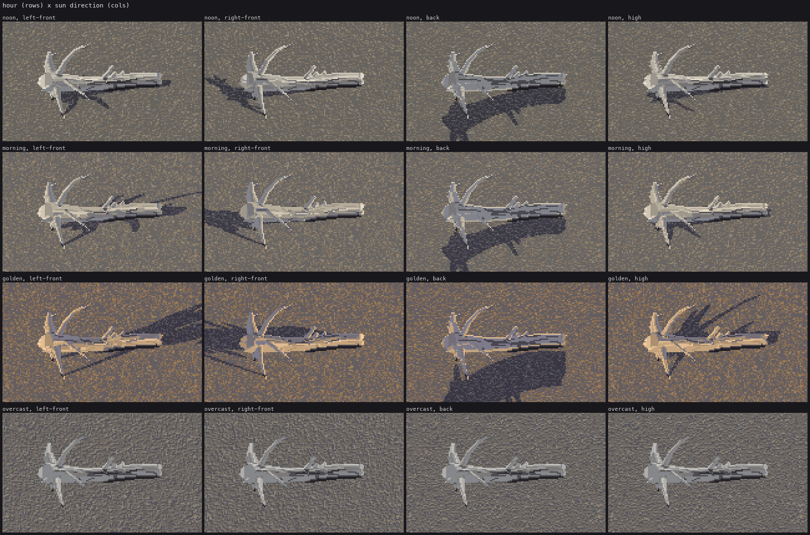
What I'd tell my earlier self
- Read the master's pixels as numbers before painting anything. The five classes and their breaks came out of a symbol dump in ten minutes, and they carried the whole study. They also travelled: the understory student shaded its nurse log with them.
- Build what the photographs show, not what the brief's words say. My dark root disc was a faithful build of "a fringed, tangled disc", and it was wrong.
- When something looks like a drawing bug, suspect the geometry first. The dashed rim was shadow acne, and the speckled break was a non-Lipschitz SDF.
- Marks and checker don't mix. Once there are marks, they turn the form, and the classes go pure.
- Where it stands. The critic's closing round listed as ready: the cylinder class order with its clean lit band, the contre-jour rims, grain, checks and knots as projected clean-run curves, value separation in piles, wet wood, and cast shadows. Not ready:
- the ground;
- big logs at 8×;
- root fans (too regular);
- pile intersections.
I agree with all of it.